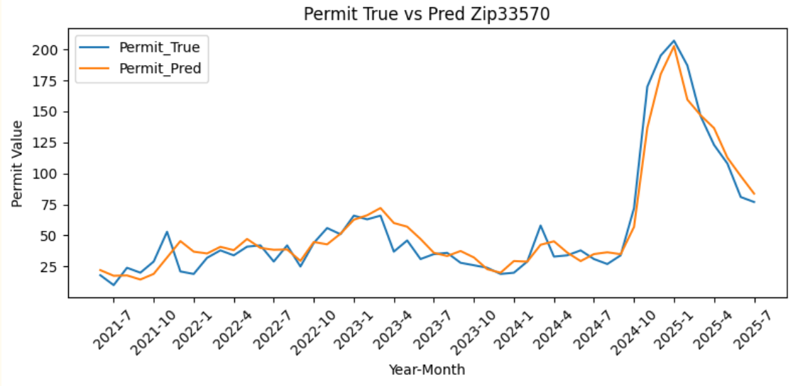
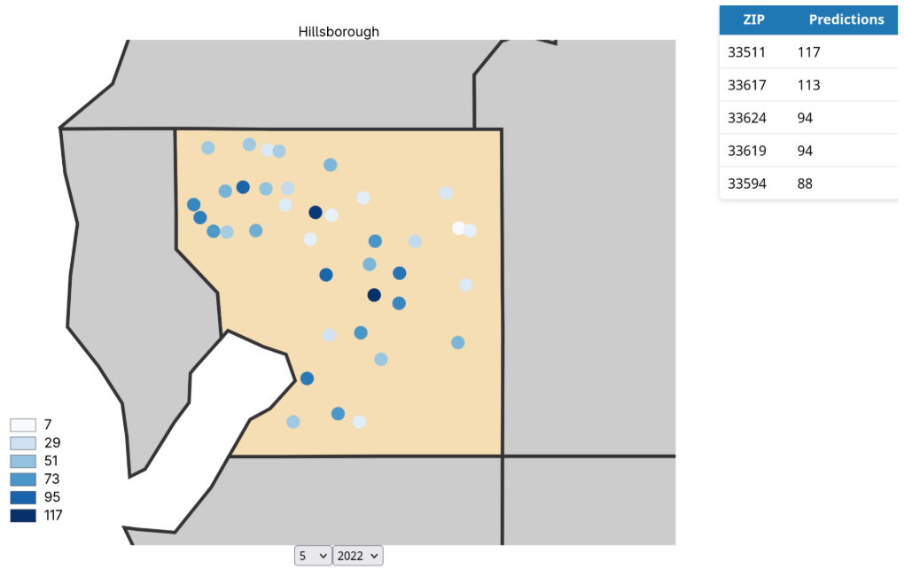

This project develops an end-to-end data-driven system to forecast roofing permit activity at the ZIP-code level using public permit records combined with socioeconomic, housing, and weather data.
The goal is to help roofing companies anticipate regional demand and improve resource allocation through predictive modeling.
Roofing companies rely heavily on manual research, referrals, and local advertising to identify potential customers. This process is inefficient and reactive.
We aim to transform this into a predictive pipeline using time-series forecasting.
We implemented a Long Short-Term Memory (LSTM) neural network to model temporal patterns in roofing permit activity.
Mean Squared Error (MSE): Used as primary evaluation metric.
We evaluated model performance using error analysis, bias inspection, and cross-region validation across multiple ZIP codes.
The model performs well in stable regions but shows higher variance in rapidly changing areas.

The model successfully captures regional permit trends and enables forecasting of monthly demand across ZIP codes.

Python · PyTorch · LSTM · Pandas · NumPy · Scikit-learn · Matplotlib